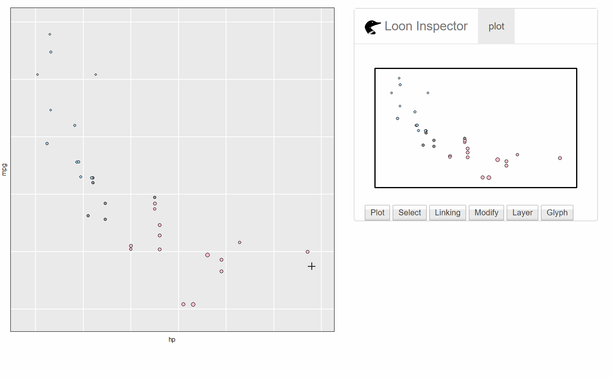
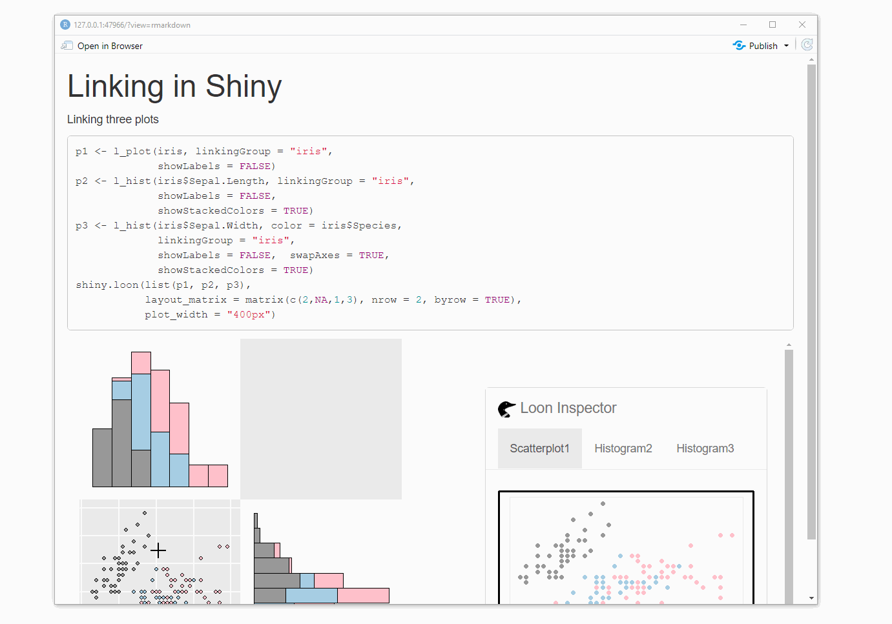
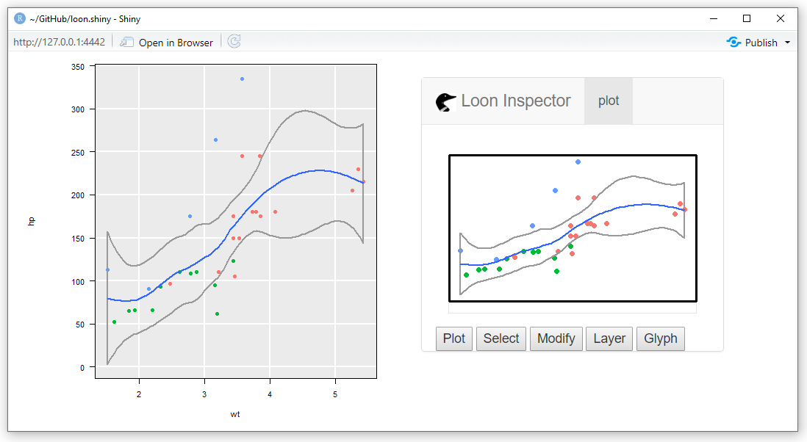

Display loon widgets in shiny app
The shiny R package simplifies the creation of interactive analysis web pages. Shiny apps facilitate sharing data analyses while simultaneously allowing, even encouraging, some interactive exploration by the viewer. An example would be the shiny app that allows viewers to explore interesting features of U.S. Secretary of State Clinton’s emails at https://shiny.math.uwaterloo.ca/sas/clinton/. Such curated interaction is immensely important for both sharing analytic results and encouraging exploration.
In contrast, the loon R package provides an interactive visualization toolkit for unconstrained, unscripted, and open-ended data exploration. It is intended for data analysts themselves.
The loon.shiny R package enables loon plots and loon style interaction (e.g., brushing, linked plots, panning, zooming, etc., as well as a shiny version of loon inspectors) to be incorporated into a shiny application (including an RMarkdown file). The loon widgets are rendered into an html file by Rmarkdown so that analysts who explore data in loon now can present their interactive graphics in Rmarkdown. Other users can then explore the data online using the rich set of visual interactions available in loon as provided by the creator of the curated analysis.
A single function, loon.shiny(), does the work.
1. Basic shiny app
library(loon.shiny)
p <- with(mtcars, l_plot(hp, mpg, color = cyl, size = wt))
loon.shiny(p)produces a web based shiny app containing the loon plot p together with its loon inspector:

2. Several linked plots in a shiny app
Here we show three plots appearing as the output of knitting an RMarkdown file. This is the more typical case.

The code for the three plot shiny app on its own would be (as shown above):
p1 <- l_plot(iris, linkingGroup = "iris",
showLabels = FALSE)
p2 <- l_hist(iris$Sepal.Length, linkingGroup = "iris",
showLabels = FALSE, showStackedColors = TRUE)
p3 <- l_hist(iris$Sepal.Length, linkingGroup = "iris",
showLabels = FALSE, swapAxes = TRUE,
showStackedColors = TRUE)
loon.shiny(list(p1, p2, p3),
layout_matrix = matrix(c(2, NA, 1, 3), nrow = 2, byrow = TRUE),
plot_width = "400px")Note that the plots are linked and the inspector is shared by/addresses all three plots (see tabs on the inspector).
3. Start with ggplot –> loon –> shiny
Some users may prefer to begin with a ggplot and construct their plots using the grammar of interactive graphics provided by loon.ggplot. A simple example follows:
library(loon.ggplot)
g <- ggplot(mtcars, mapping = aes(x = wt, y = hp)) +
geom_point(mapping = aes(color = factor(gear))) +
geom_smooth()
loon.shiny(loon.ggplot(g),
left = 20,
right = "auto")which results in

Compared to ggplot to shiny, ggplot –> loon –> shiny extends the app to give more interactivity to the user. Users can now direct manipulate plots, such as highlighting points, changing colours and sizes, modifying layer orders, and more.
With several plots, linking allows brushing across several plots.
Installation
# From CRAN
install.packages("loon.shiny")
# Or from github
devtools::install_github("great-northern-diver/loon.shiny")
# Or as part of the diveR suite of loon related packages
install.packages("diveR")Rmarkdown
An R Markdown file containing Shiny widgets and outputs is an interactive document. To make an R Markdown document interactive in two steps:
-
add
runtime: shinyto the document’s YAML header. For example,--- title: "My Title" author: "Me" date: "15/05/2021" output: html_document runtime: shiny --- add Shiny widgets and Shiny render functions to the file’s R code chunks. Note that, in a single R markdown file, more than one apps can be added.
The diveR suite
loon, loon.shiny, and loon.ggplot are all part of the diver suite of packages (https://great-northern-diver.github.io/diveR/), the looniverse for direct interactive visual exploration in R.